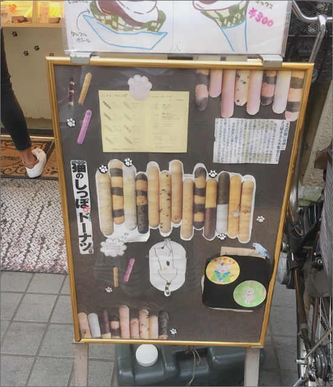

Momoko Tanaka
現在アパレル業界で勤務しており、動きがあるデザインのサイトに興味を持った事がきっかけで、Webデザイナーの学校にて勉強中。趣味は音楽を聴く事や色んな写真を撮影する事。猫好きな為、猫カフェに行ってよく撮影をする事が好き。

Cat't tail
JR日暮里駅から徒歩５分にある猫のしっぽをモチーフとした「焼きドーナッツ」が人気の『やなかしっぽや』さん のドーナッツです。中谷銀座商店街といえば猫！という事で、お散歩している所で見つけました。ドーナッツなので結構甘めなのかと思いきや、丁度良い甘さでしっとりしていて凄く美味しかったです！形も棒状なので、商店街を食べ歩きするのにも食べやすくて良かったです。色んな種類があるので是非チェックしてみて下さい♪

I`m fond of taking catpictures.
私は写真を撮るのが好きなのですが、猫を撮影する事が１番好きなので、よく猫カフェに行っては猫の撮影をしております。その中で、１番良く撮影できた１枚をご紹介致しました。お寿司やはちまき等のグッズは猫カフェのスタッフさんがご用意して下さいました！